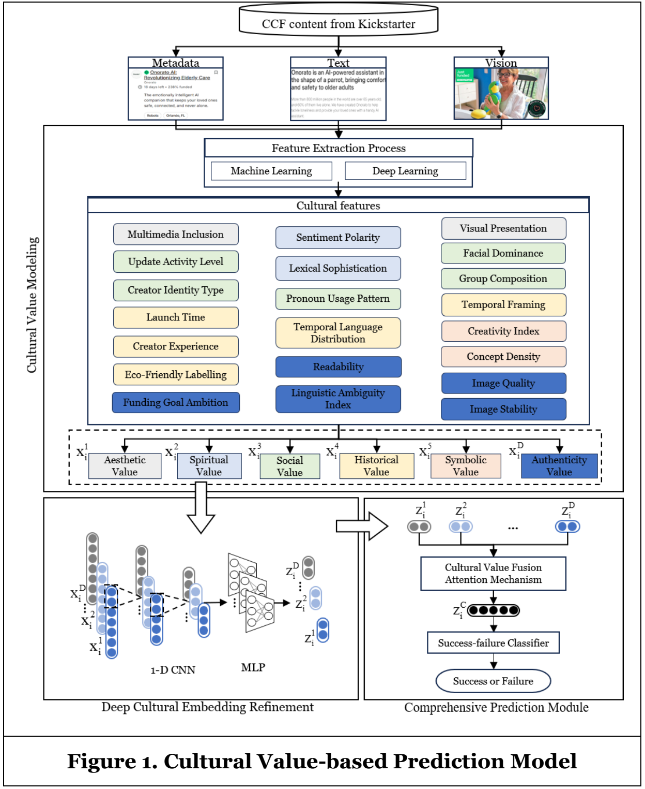

Research
Yihao works on multimodal prediction for crowdfunding and multi-view clustering for industrial fault diagnosis. His published crowdfunding research examines the roles of cultural values in predicting project success.
Peer-reviewed publications

Creative projects convey cultural meaning through text, images, and metadata. This study models those values and examines their roles in predicting crowdfunding success. The Cultural Value-based Prediction Model (CV-PM) maps content features to Throsby's six cultural values. Convolutional networks reduce noise in each value representation, and attention combines the values for prediction. On 14,539 Kickstarter projects, AUC reached 94.72% in Art and 95.14% in Design, exceeding the strongest respective baselines by 1.49 and 3.65 percentage points. In value ablations, the largest accuracy losses occurred when removing social value in Art (7.17 percentage points) and aesthetic value in Design (5.19).
IEEE Sensors Journal, 2025
Yihao Xu, Mingfeng Lu, Gang Wang, and Fang Fang
IEEE Sensors Journal, 25(11), 19921–19936, 2025.

In unsupervised fault diagnosis, features learned separately from clustering may not suit the clustering task. Multiple sensors also provide consistent and complementary information that the model needs to retain. The multisensor deep clustering network (MsDCN) uses a sensor-aware attentive encoder to learn consensus representation features and separate encoders to retain sensor-specific features. A consensus-specific constraint guides joint optimization of reconstruction and clustering. Across 20 runs per dataset, MsDCN achieved the highest mean clustering accuracy on six gearbox and bearing datasets. Gains over the strongest comparison method were 5.74–11.35 percentage points on the two DIRG bearing datasets. Ablations evaluated the sensor-aware attentive encoder and consensus-specific constraint.
Working papers
Multimodal Learning under Evolving Environments for Crowdfunding Outcome Prediction
Yihao Xu, Wenxiang Zhao, and Hefu Liu
Work in progress. Planned submission to Information Systems Research in 2026.
Campaign text and images contain both overlapping and complementary information. SSC-TAP retains shared, modality-specific, and interaction information within a common semantic reference and learns their joint contribution to prediction before launch.
Content distributions and the predictive relevance of that content can change over time. Temporal relevance adaptation models these changes separately and adjusts each semantic dimension's predictive contribution for the target campaign and its launch time.
From Anchor to Evidence: A Theory-Driven Model for Newly Launched Crowdfunding Success Prediction
Wenxiang Zhao, Yihao Xu, and Xiaoyu Yao
Working paper.
This study uses anchoring-and-adjustment theory to distinguish summary cues on listing pages from information on project detail pages when predicting crowdfunding success before launch.
Research in progress
Cultural Matching and Supply Chain Efficiency and Resilience
Along Liu, Mengru Zhang, Yihao Xu, and Hefu Liu
Research in progress.
This project examines whether cultural matching between Chinese listed firms and their disclosed suppliers and customers is associated with supply chain efficiency and resilience, accounting for firm and year differences.
It measures culture from annual-report management discussion and analysis using researcher-defined seed sentences and Qwen embeddings to retrieve related terms from the report corpus.
Knowing When to Be Firm: Communication Style Shifts in AI-Assisted Food Delivery
Early-stage Research Project.
Food-delivery customers may request coupons while leaving emotional needs unspoken. The project examines shifts between assertive and nonassertive AI language during coupon assistance and emotional support. It considers customer preference profiles and responses across conversational turns in relation to subsequent purchase decisions.